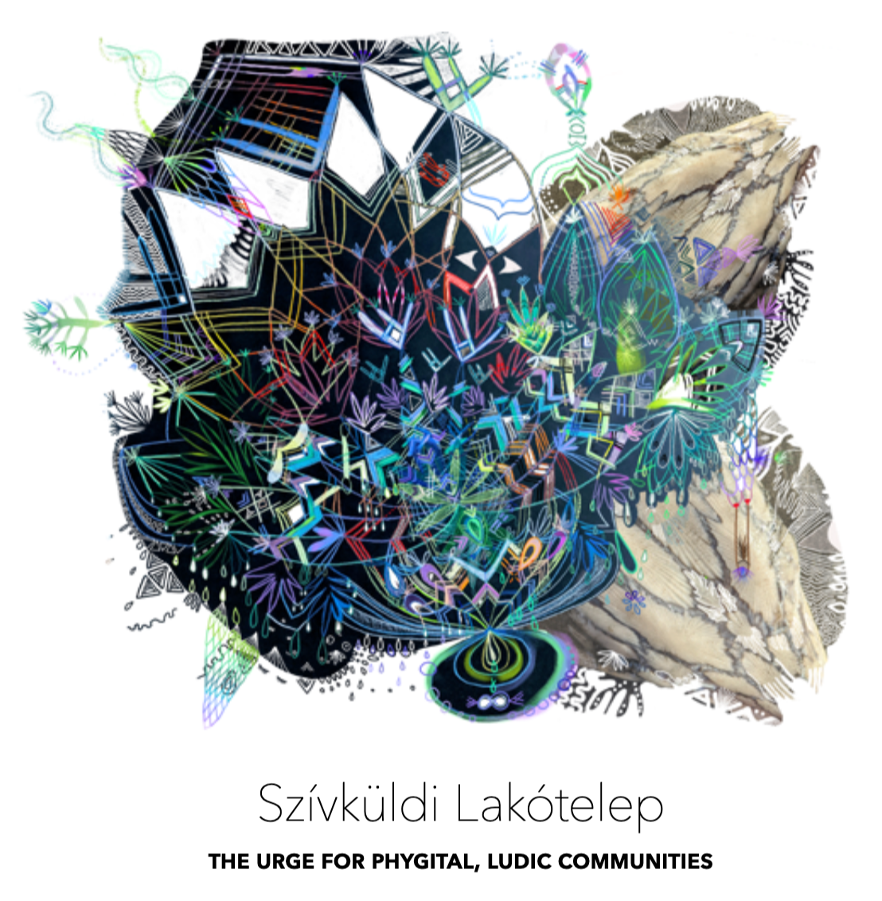

EXHIBITION BY JUDIT NAVRATIL
February 14 - 28
Curated by Selby Sohn + Your Mood Projects
14 February 5-8 pm
OPENING PERFORMANCE LECTURE AND DANCE WITH THE JUNCTION KEEP
28 February 4-6 pm
CLOSING CONVERSATION WITH VANESSA CHANG AND CASSIE THORNTON
Judit Navratil is presenting her PhD thesis in a solo show curated by Selby Sohn + Your Mood Projects at Dream Farm Commons. The opening takes the form of Judit’s performance lecture, followed by a Valentine’s Day dance with The Junction Keep, a mobile public art experience that bridges safety, storytelling, and spirit across the Bay Area.
These past three years, Navratil has worked on her artistic research PhD, which she defended in a presentation in Vienna in December, successfully. Szívküldi Lakótelep: the urge for phygital, ludic communities traces her long-term, practice-based inquiry into digital belonging and topophilia. It engenders community-making across social VR through embodied, participatory forms. Judit’s PhD is framed by her experience as an immigrant in continuous transit and movement. Her Reflexive Document is structured as a series of Long Distance Somersaults moving through möbius loops, circling around questions of home, play and care across phygital space. The exhibition serves as the layered, spatial constellation. The base of this research unfolds as an embodied inventory that comes into full articulation through her performance lecture as a living, connective whole.
Open Fri-Sat 1-6 and by appointment: navratiljudit@gmail.com
More info about these events and our guests on our website.
https://www.artbylaurus.com/thejunctionkeep
https://www.vanessa-chang.com/
https://feministeconomicsdepartment.com/
https://yourmoodprojects.com/
https://www.juditnavratil.com/